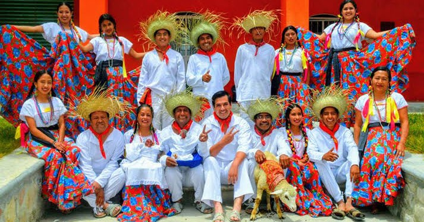
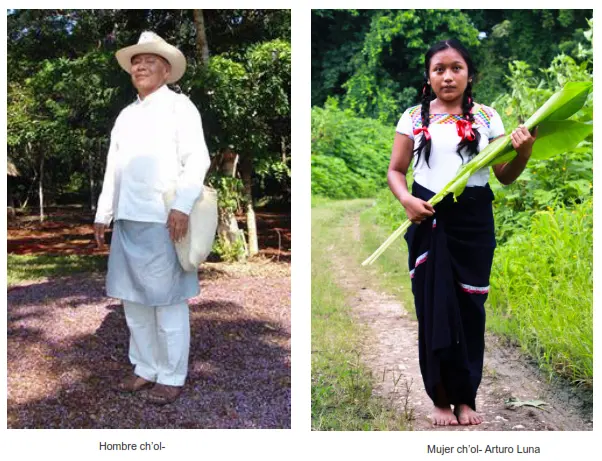
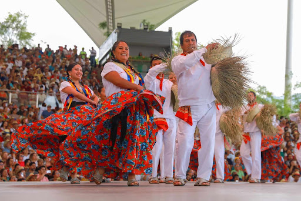

lengua chocholteco

El chocho es una lengua que junto al idioma popolca pertenece al grupo chocho-popoloca y a las lenguas popolocanas que forman al otomangue
Esta lengua junto con todas las lenguas indígenas de México y el español fueron reconocidas como "lenguas nacionales" gracias a la ley general de derechos linguisticosde los pueblos indigenas
| imagen | precio | audio |
|---|---|---|
| vestimenta | $64 depende que prenda compres | |
| comida | $80 por plato | |
| bailes | no hay precio |
En cuanto a su alineamiento morfosintactico es una lengua de tipo activo-inactiva, donde el uso de pronombres y el tratamiento de sujeto de una oración intransitiva depende del significado de dicho verbo.